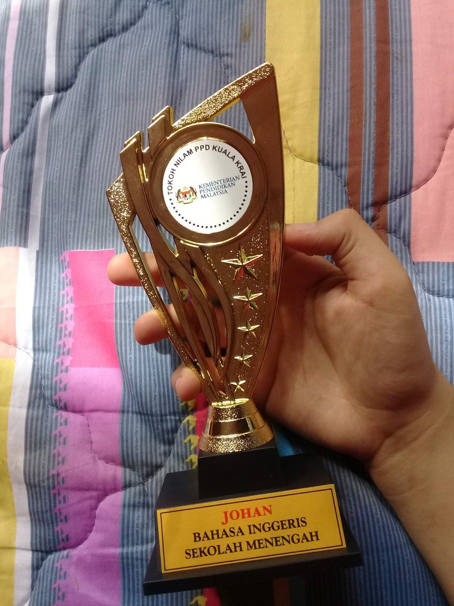
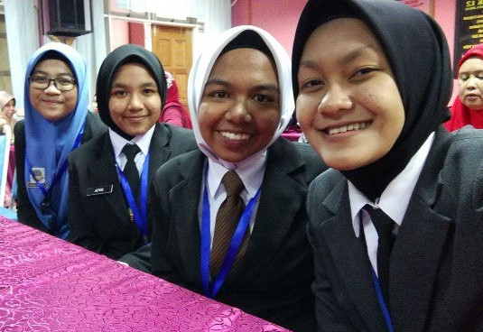

E X P E R I E N C E S
One of my favorite years goes to...2019
Joined "Tokoh Nilam" competition and won 1st place for district level
-My teacher convinced me to get out of my comfort zone and try something new by joining a few competitions before I finish secondary school.
Got to experience "Tokoh Nilam" competition for state level
-During this time i was so nervous but luckily I made some new friends from another schools and they were so cool and nice too!
Finished my first ever painting by number with my sister!
-You can tell by my facial expression that I was so proud of it hahaha.
Went to one of the most beautiful beaches in K.Terengganu
-It is called Pantai Pandak.